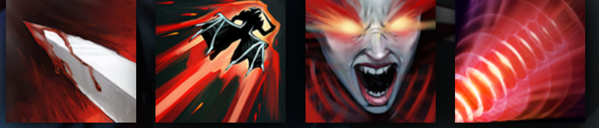

QUEEN OF PAIN
BLINKS IN TO DEAL MASSIVE MAGICAL DAMAGE
HISTORY
The Ecclesiast-King of Elze nursed a desire for pain--forbidden pain. In a less prominent political figure, such desires might be considered unwise, but in a monarch of his stature, to satisfy such thirsts would have threatened the virtue of the Divine Throne itself. Therefore he turned to his dungeon full of demonologists, promising freedom to whoever could summon a personal succubus of torment and bind it entirely to his service. The creature who arrived, Akasha by name, visited upon him such exquisite torments that he named her his Secret Queen, and he began to spend all his spare moments submitting to her clever torments--eventually abdicating all his responsibilities in his pursuit of the painful pleasures that only she could bring. Queen of Pain could bring him to the brink of death, but she was rune-bound to keep him alive. At last the King's neglect of state brought on an uprising. He was dragged from his chamber and hurled from the Tower of Invocations, and at the moment of death, Queen of Pain was let loose into the world, freed from servitude--freed to visit her sufferings on anyone she deigned to notice.
ABILITIES
PAIRD WELL WITH
SAND KING
jakiro
WITCH DOCTOR